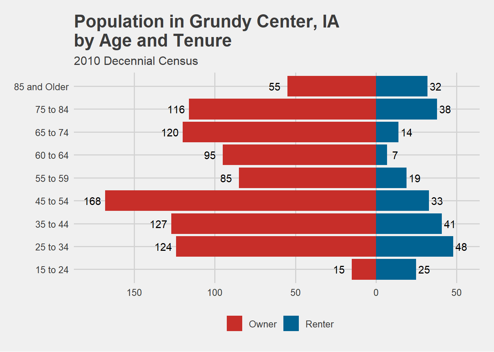
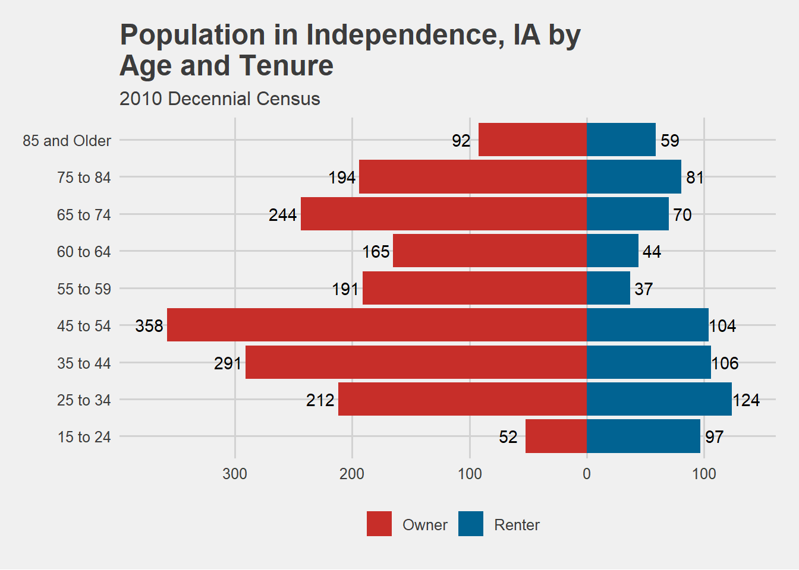

library(tidycensus)
library(tidyverse)Warning: package 'tidyverse' was built under R version 4.1.3Warning: package 'ggplot2' was built under R version 4.1.3Warning: package 'tibble' was built under R version 4.1.3Warning: package 'tidyr' was built under R version 4.1.3Warning: package 'readr' was built under R version 4.1.3Warning: package 'purrr' was built under R version 4.1.3Warning: package 'dplyr' was built under R version 4.1.3Warning: package 'stringr' was built under R version 4.1.3Warning: package 'forcats' was built under R version 4.1.3Warning: package 'lubridate' was built under R version 4.1.3-- Attaching core tidyverse packages ------------------------ tidyverse 2.0.0 --
v dplyr 1.1.2 v readr 2.1.4
v forcats 1.0.0 v stringr 1.5.0
v ggplot2 3.4.2 v tibble 3.2.1
v lubridate 1.9.2 v tidyr 1.3.0
v purrr 1.0.1
-- Conflicts ------------------------------------------ tidyverse_conflicts() --
x dplyr::filter() masks stats::filter()
x dplyr::lag() masks stats::lag()
i Use the conflicted package (<http://conflicted.r-lib.org/>) to force all conflicts to become errorslibrary(ggthemes)
##ONWER VS. RENTER OCCUPIED FOR EACH CITY
own_iowa <- get_decennial(geography = "place",
state = "IA",
year = 2010,
output = "wide",
variable = c("H017003","H017004","H017005","H017006","H017007","H017008","H017009","H017010","H017011")) %>%
mutate(tenure = "Owner") %>%
rename(fifteentotwentyfour = H017003, twentyfivetothirtyfour = H017004, thirtyfivetofourtyfour = H017005, fourtyfivetofiftyfour = H017006, fiftyfivetofiftynine = H017007, sixtytosixtyfour = H017008, sixtyfivetoseventyfour = H017009, seventyfivetoeightyfour = H017010, overeightyfive = H017011)Getting data from the 2010 decennial Census
Using Census Summary File 1## Getting data from the 2010 decennial Census
## Using Census Summary File 1
rent_iowa <- get_decennial(geography = "place",
state = "IA",
year = 2010,
output = "wide",
variable = c("H017013","H017014", "H017015", "H017016", "H017017","H017018","H017019", "H017020","H017021")) %>%
mutate(tenure = "Renter") %>%
rename(fifteentotwentyfour = H017013, twentyfivetothirtyfour = H017014, thirtyfivetofourtyfour = H017015, fourtyfivetofiftyfour = H017016, fiftyfivetofiftynine = H017017, sixtytosixtyfour = H017018, sixtyfivetoseventyfour = H017019, seventyfivetoeightyfour = H017020, overeightyfive = H017021)Getting data from the 2010 decennial Census
Using Census Summary File 1## Getting data from the 2010 decennial Census
## Using Census Summary File 1
iowa <- rent_iowa %>%
bind_rows(own_iowa)%>%
pivot_longer(-c(NAME, GEOID, tenure),
names_to = "agegroups",
values_to = "count")
###plots for grundy, independence and new hampton for age break downs by housing tenure
iowa %>%
filter(NAME == "New Hampton city, Iowa") %>%
mutate(agegroups = fct_relevel(agegroups, c("fifteentotwentyfour", "twentyfivetothirtyfour","thirtyfivetofourtyfour","fourtyfivetofiftyfour","fiftyfivetofiftynine","sixtytosixtyfour","sixtyfivetoseventyfour","seventyfivetoeightyfour","overeightyfive"))) %>%
ggplot(aes(x = agegroups, y = if_else(tenure == "Renter", count, -count))) +
geom_bar(aes(fill = tenure), stat = "identity") +
geom_text(aes(x = agegroups, y = if_else(tenure == "Renter", count +10, -count - 12), label = scales::comma(count))) +
coord_flip()+
scale_x_discrete(labels = c("15 to 24", "25 to 34", "35 to 44", "45 to 54", "55 to 59", "60 to 64", "65 to 74", "75 to 84", "85 and Older")) +
scale_y_continuous(label = abs)+
labs(x = "",
y = "Population",
fill = "",
title = "Population in New Hampton, IA \nby Age and Tenure",
subtitle = "2010 Decennial Census") +
theme_fivethirtyeight()+
theme(legend.position = "bottom") +
scale_fill_wsj()
iowa %>%
filter(NAME == "Grundy Center city, Iowa") %>%
mutate(agegroups = fct_relevel(agegroups, c("fifteentotwentyfour", "twentyfivetothirtyfour","thirtyfivetofourtyfour","fourtyfivetofiftyfour","fiftyfivetofiftynine","sixtytosixtyfour","sixtyfivetoseventyfour","seventyfivetoeightyfour","overeightyfive"))) %>%
ggplot(aes(x = agegroups, y = if_else(tenure == "Renter", count, -count))) +
geom_bar(aes(fill = tenure), stat = "identity") +
geom_text(aes(x = agegroups, y = if_else(tenure == "Renter", count +5, -count - 8), label = scales::comma(count))) +
coord_flip()+
scale_x_discrete(labels = c("15 to 24", "25 to 34", "35 to 44", "45 to 54", "55 to 59", "60 to 64", "65 to 74", "75 to 84", "85 and Older")) +
scale_y_continuous(label = abs)+
labs(x = "",
y = "Population",
fill = "",
title = "Population in Grundy Center, IA \nby Age and Tenure",
subtitle = "2010 Decennial Census") +
theme_fivethirtyeight()+
theme(legend.position = "bottom") +
scale_fill_wsj()
iowa %>%
filter(NAME == "Independence city, Iowa") %>%
mutate(agegroups = fct_relevel(agegroups, c("fifteentotwentyfour", "twentyfivetothirtyfour","thirtyfivetofourtyfour","fourtyfivetofiftyfour","fiftyfivetofiftynine","sixtytosixtyfour","sixtyfivetoseventyfour","seventyfivetoeightyfour","overeightyfive"))) %>%
ggplot(aes(x = agegroups, y = if_else(tenure == "Renter", count, -count))) +
geom_bar(aes(fill = tenure), stat = "identity") +
geom_text(aes(x = agegroups, y = if_else(tenure == "Renter", count +12, -count - 15), label = scales::comma(count))) +
coord_flip()+
scale_x_discrete(labels = c("15 to 24", "25 to 34", "35 to 44", "45 to 54", "55 to 59", "60 to 64", "65 to 74", "75 to 84", "85 and Older")) +
scale_y_continuous(label = abs)+
labs(x = "",
y = "Population",
fill = "",
title = "Population in Independence, IA by \nAge and Tenure",
subtitle = "2010 Decennial Census") +
theme_fivethirtyeight()+
theme(legend.position = "bottom") +
scale_fill_wsj()